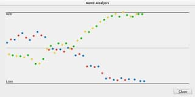
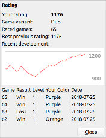

Pentobi has functionality that can help you to become a stronger Blokus player.
A game can be analyzed by selecting Analyze Game from the Tools menu. This will make the computer player evaluate each position in the main variation. The result is displayed in a window with a diagram of colored dots.

Each dot represents a game position in which the color of the dot was to play. The dots are ordered horizontally by move number. The vertical axis represents the estimated probability of winning the game for the color to play. Mouse clicks in the diagram will go to the corresponding position.
The position values are only estimates and the computer will sometimes evaluate positions incorrectly. But sudden drops in the value can help you find moves that were potentially bad. You can go back to the position before the move and try to find a better move or ask the computer what it would have played by selecting Play Single Move from the Computer menu.
You can track your progress by playing rated games against the computer. The game results are used to determine your current rating. The rating is a number that represents your playing strength.
A rated game is started with Rated Game from the Game menu or the toolbar. If you have not played any rated games in the current game variant, you will be asked to choose a start value, which can reduce the number of games needed for determining your real rating. If you are a beginner, leave the start value at 800.
For each rated game, the computer will choose a playing level for the computer opponent according to your current rating. The color you play will be randomly chosen in each game.
During a rated game, most of the functions not needed for playing are disabled: you cannot undo moves, navigate in the game, change the computer colors or change the playing level. To get an accurate rating, you should always play rated games until the end.
After the game has ended, your rating will be updated depending on the game result and the computer level. For the game result, it only matters whether the game was won, lost or a tie. The exact number of score points does not matter.

You can always see your current rating by selecting Rating from the Tools menu. This will open a window that shows the development of your rating during the last 50 games as a graph. The last 50 games are automatically saved and can be loaded by opening a context menu in the game table below the graph.